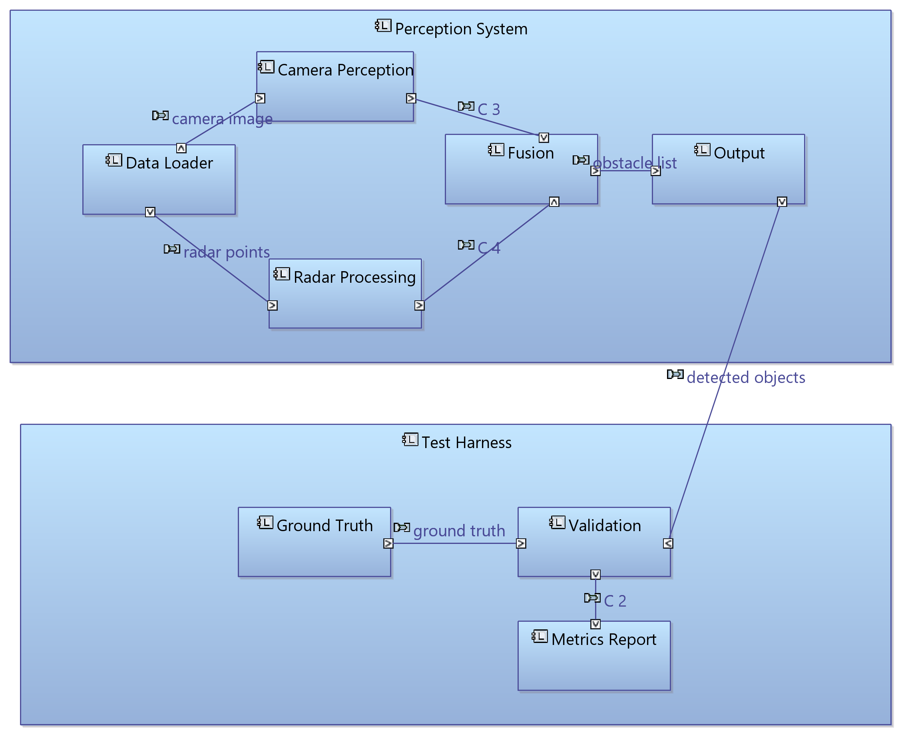
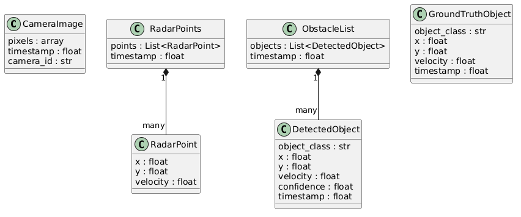
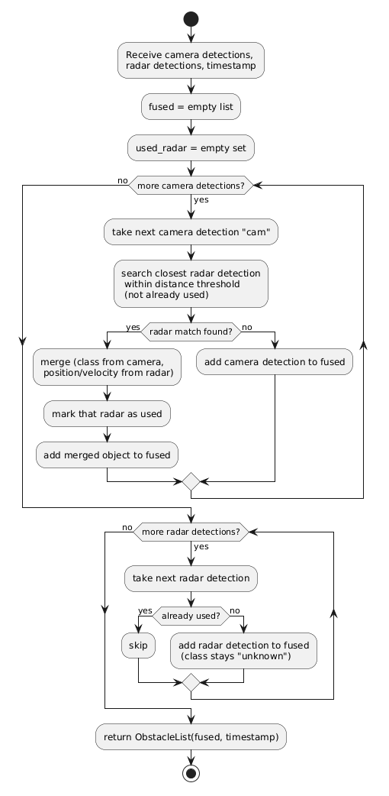
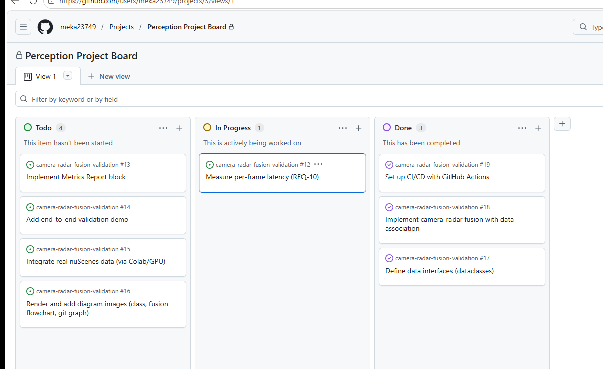
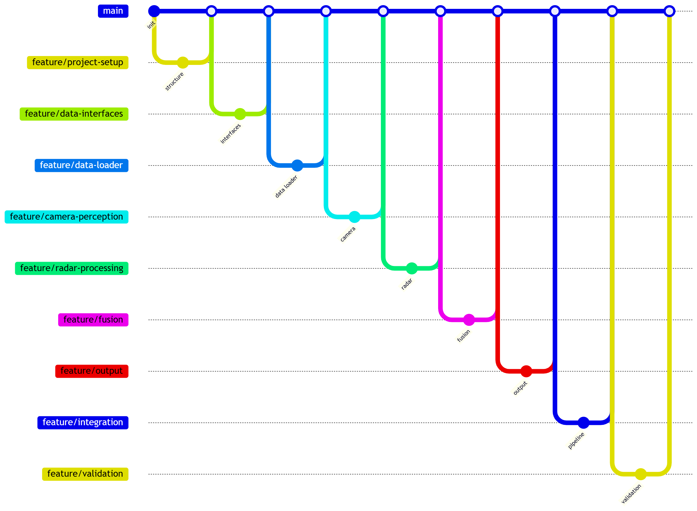

Kamera-Radar-Fusion · Anforderungsbasierte SiL-Validierung
Wahrnehmungssystem zur Hinderniserkennung (Kamera + Radar), validiert als Software-in-the-Loop: auf reproduzierbaren synthetischen Szenarien und auf realen nuScenes-Daten (reales Radar, reale Ground Truth).
Motivation
In der realen ADAS-Entwicklung entfällt der größte Teil des Aufwands auf das Testen und Validieren von Wahrnehmungssoftware, nicht allein auf deren Entwicklung. Dieses Projekt bildet genau diesen Workflow vollständig ab: von den Anforderungen über die Systemarchitektur bis zu einer automatisierten, anforderungsbasierten Validierungs-Pipeline mit CI/CD.
Der Fokus liegt bewusst auf der Validierung: der Wahrnehmungsalgorithmus (Kamera-Detektion, Radarverarbeitung, Fusion) ist das System under Test; das eigentliche Ergebnis ist eine reproduzierbare Validierungsumgebung mit rückverfolgbaren Anforderungen, automatisierten Metriken und CI/CD.
1 - Systemgrenze & Ansatz
Die Architektur trennt zwei klar abgegrenzte Teile: das System under Test (das Wahrnehmungssystem) und das Test Harness (die Validierungsumgebung). Diese Trennung spiegelt die reale ADAS-Entwicklung wider - die Wahrnehmungssoftware läuft im Fahrzeug, die Validierung läuft offline gegen annotierte Daten.
Die Validierung läuft in zwei Stufen:
- Synthetische SiL (umgesetzt): Ein Szenariogenerator mit festem Seed erzeugt bewegte Verkehrsteilnehmer mit exakt bekannter Ground Truth. Objektbasierte Kamera- und Radarmodelle bilden typische Sensorschwächen nach (Tiefenfehler, begrenzte Reichweite, mehrere Radarechos pro Fahrzeug, Clutter). Damit wird die Fusionslogik validiert, nicht die Sensoren selbst.
- Realdaten-SiL (teilweise umgesetzt): Radarpunkte und Annotationen werden aus nuScenes v1.0-mini abgespielt; die Radardaten werden auf den Kamerazeitstempel bewegungskompensiert. Die Kamera ist noch modelliert, da der Detektor noch fehlt. Parameter werden auf 5 Szenen eingestellt und auf 5 anderen einmalig geprüft.
In beiden Stufen wird die Ausgabe gegen die Ground Truth verglichen; Recall, Precision und Latenz werden automatisch berechnet und je Anforderung mit PASS/FAIL bewertet.
2 - Architektur (Capella / MBSE)
Die logische Architektur wurde in Capella (Arcadia / MBSE) modelliert. Sie zeigt die beiden getrennten Bereiche und die Component Exchanges zwischen den Blöcken.

Der Data Loader liest wahlweise synthetische Szenarien oder nuScenes-Daten; Architektur und Validierung bleiben gleich.
| Block | Aufgabe |
|---|---|
| Data Loader | Sensordaten einlesen, Kamera & Radar zeitlich synchronisieren |
| Camera Perception | Objekte im Bild erkennen und klassifizieren (aktuell Platzhalter, Detektor geplant) |
| Radar Processing | Radarechos zu Objekten clustern (Position, Geschwindigkeit, Konfidenz) |
| Fusion | Kamera- und Radardetektionen per optimaler Datenassoziation zusammenführen |
| Output | Hindernisliste filtern und strukturiert ausgeben |
| Ground Truth | Referenzobjekte bereitstellen (synthetische Szenarien oder nuScenes-Annotationen, mit dokumentierten Bewertungsregeln) |
| Szenario & Sensormodelle | Synthetische Szenarien mit Ground Truth, objektbasierte Kamera- und Radarmodelle |
| Validation | Recall / Precision gegen Ground Truth (klassenbewusst, nach Konfidenz sortiert) |
| SiL-Runner | Szenario → System → Metriken → Urteil je Anforderung |
| Metrics Report | Bericht (JSON / Markdown) bei jedem CI-Lauf veröffentlicht |
3 - Datenmodell (Design → Code)
Die zwischen den Blöcken ausgetauschten Datenstrukturen wurden zuerst im Design
festgelegt und als Python-dataclasses implementiert und mit Unit-Tests abgesichert.

@dataclass
class DetectedObject:
object_class: str # "car", "pedestrian", ...
x: float # longitudinale Position
y: float # laterale Position
velocity: float # Relativgeschwindigkeit
confidence: float # Detektionskonfidenz 0..1
timestamp: float # zugehöriger Frame4 - Fusion: Datenassoziation
Kamera und Radar können dasselbe reale Objekt erfassen. Die Fusion ordnet Detektionen desselben Frames einander zu und übernimmt die Klasse von der Kamera sowie Position und Geschwindigkeit vom Radar.
Version 2, abgeleitet aus den Validierungsergebnissen:
- Optimale Zuordnung (ungarischer Algorithmus) statt Greedy-Zuordnung: das Ergebnis hängt nicht mehr von der Reihenfolge der Listen ab.
- Entfernungsabhängige Assoziationsschwelle (3 m + 0,08 × Entfernung): der Tiefenfehler der Kamera wächst mit der Entfernung. Mit fester 3-m-Schwelle wurde ein Fahrzeug bei 75 m in 46 % der Frames doppelt ausgegeben, danach in 4 %.
- Synchronisationsprüfung (REQ-12): Detektionen aus einem anderen Frame (Abweichung > 50 ms) werden abgelehnt.
Version 3, abgestimmt auf realen nuScenes-Daten (auf 5 Szenen eingestellt, auf 5 anderen einmalig geprüft):
- Elliptisches Assoziationsgate (0,75 m quer, 3 m längs zur Sichtlinie): die Kamera schätzt die Entfernung ungenau, die Richtung aber genau. Clutter neben einem Fahrzeug (z. B. eine Leitplanke) übernimmt so nicht mehr dessen Kameradetektion: +7,5 Punkte Recall im Nahbereich.
- Unbestätigte Radarobjekte müssen sich bewegen (≥ 5 m/s): 84 % der realen Radarpunkte sind statisch. Fehlalarme sinken von rund 57 auf rund 5 pro Frame.
- Kein mit der Entfernung wachsendes Gate mehr: die in Version 2 auf synthetischen Daten eingestellte Erweiterung verschlechtert das System auf realen Daten.

Ablauf der Version 1
5 - Anforderungen & Traceability
Jeder Test ist im Code mit seiner Anforderung markiert
(@pytest.mark.requirement("REQ-XX")). Ein automatischer Test prüft bei jedem
Lauf, dass die Traceability-Matrix exakt mit diesen Markierungen übereinstimmt.
Verifikationsstufen: L1 = Logik (Unit-Test), L2 = synthetische SiL, L3 = reale Daten. Nachweisregel: Ein Zielwert gilt nur als erfüllt, wenn das gesamte 95-%-Konfidenzintervall über dem Zielwert liegt.
Ergebnisse auf realen Daten: nuScenes v1.0-mini, nur Validierungsszenen (nie zum Einstellen verwendet), reales Radar, reale Ground Truth, modellierte Kamera.
| ID | Anforderung | Zielwert | Gemessen [95-%-KI] | Stufe | Status |
|---|---|---|---|---|---|
| REQ-04 | Reichweite Radar | Recall > 0,5 (120–180 m) | 0,67 [0,21–0,94], n = 3 | L3 | ⚠️ nicht schlüssig |
| REQ-05 | Reichweite Gesamtsystem | Recall > 0,5 (80–180 m) | 0,21 [0,13–0,31], n = 82 | L3 | ❌ |
| REQ-08 | Recall Fahrzeuge < 30 m | ≥ 0,90 | 0,78 [0,73–0,82], n = 318 | L3 | ❌ |
| REQ-09 | Precision | ≥ 0,80 | 0,47 [0,44–0,49] | L3 | ❌ |
| REQ-10 | Latenz pro Frame | ≤ 100 ms | 2,1 ms (nur Fusionsstufe) | L3 | ⚠️ ohne Detektor |
| REQ-11 | nuScenes-Daten einlesen | – | alle 404 Samples | L3 | ✅ |
| REQ-12 | Synchronisation Kamera / Radar | ≤ 100 ms, bewegungskompensiert | max. 72 ms gemessen | L1 | ✅ |
| REQ-03 | Reichweite Kamera | ≥ 80 m | – | – | ❌ benötigt echten Kameradetektor |
Das System erfüllt seine Anforderungen auf realen Daten nicht. Auf dem synthetischen Prüfstand erfüllte es sie (Precision 0,81, Recall 0,92), doch das synthetische Radarmodell hatte rund 40-mal weniger Clutter als das reale Radar. Die verbleibende Lücke ist eine Grenze der Architektur (keine zeitliche Verfolgung über mehrere Frames), keine Frage der Parametrierung.
REQ-04, REQ-05 und REQ-12 wurden auf Basis der Messungen präzisiert; die Änderungen sind im Repository mit Begründung versioniert.
6 - Was die Validierung gefunden hat
Jeder der folgenden Fehler wurde von der Validierungsumgebung selbst gefunden, mit einem Test reproduziert und in einem eigenen Commit behoben.
| Befund | Wie gefunden | Behebung |
|---|---|---|
| Matrix meldete Anforderungen als verifiziert durch Tests, die nicht fehlschlagen konnten | Frage an jeden Test: „Schlägt er fehl, wenn die Anforderung verletzt ist?" | Ehrliche Verifikationsstufen (L1 / L2 / L3) |
| Metriken ignorierten Klassen und hingen von der Listenreihenfolge ab | Gezielte Gegenbeispiele | Klassenbewusste, nach Konfidenz sortierte Zuordnung |
| Precision 0,50: jedes Radarecho wurde ein eigenes Objekt | Erster SiL-Lauf, dann Ein-Fahrzeug-Experiment | Clustering der Radarechos |
| Feste 3-m-Schwelle trennte ferne Objekte (46 % bei 75 m) | Experiment über die Entfernung | Ungarischer Algorithmus, entfernungsabhängige Schwelle |
| Zeitstempel dokumentiert geprüft, aber nie geprüft | Detektion aus fremdem Frame fusioniert | SynchronizationError (REQ-12) |
| Ergebnisse schwankten leicht zwischen Läufen und Rechnern | Gleicher Seed, anderer PYTHONHASHSEED | Deterministische Reihenfolge, prozessübergreifender Test |
| Handgepflegte Matrix wich vom Code ab | Automatischer Abgleich mit den Test-Markierungen | Matrix wird bei jedem Testlauf geprüft |
| Synthetische Ergebnisse waren nicht übertragbar: Precision 0,81 synthetisch, 0,08 mit realem Radar | Erster Lauf mit realen nuScenes-Radardaten | Anforderungsnachweis auf reale Daten (L3) verlagert; synthetischer Prüfstand nur noch als Logik-Regressionstest |
| Ein Zuordnungsschwellwert von 5 m ließ unabhängige Detektionen Fahrzeuge „finden" (Zufallsniveau 60–68 %) | Gleiche Detektionen gegen die Ground Truth eines fremden Frames | Einheitlich 2 m, Zufallsniveau wird mit ausgewiesen |
| Mit realem Radar war die Fusion schlechter als die Kamera allein | Kontrollierte Experimente (Radar aus, Gate-Form) | Elliptisches Gate, unbestätigte Radarobjekte müssen sich bewegen |
| REQ-04, REQ-05 und REQ-12 waren in ihrer Formulierung nicht prüfbar | Reale Sensordaten | Anforderungen präzisiert, mit Änderungshistorie |
Auf dem synthetischen Prüfstand:
| Version | Precision (REQ-09) | Recall < 30 m (REQ-08) |
|---|---|---|
| Ausgangsstand | 0,50 ❌ | 0,97 |
| + Clustering der Radarechos | 0,76 ❌ | 0,93 |
| + optimale Zuordnung, entfernungsabhängige Schwelle | 0,81 ✅ | 0,92 |
Auf realen Daten (Validierungsszenen):
| Konfiguration | Precision (REQ-09) | Recall < 30 m (REQ-08) | Recall 80–180 m (REQ-05) |
|---|---|---|---|
| Vorher (auf synthetischen Daten eingestellt) | 0,07 ❌ | 0,68 ❌ | 0,62 |
| Jetzt (auf realen Daten eingestellt) | 0,47 ❌ | 0,78 ❌ | 0,21 ❌ |
| Kamera allein (modelliert, Referenz) | 0,70 | 0,81 | 0,00 |
7 - Projektmanagement
Das Projekt wird mit GitHub Issues und einem Kanban-Board organisiert (Todo / In Progress /
Done), der frei verfügbaren Entsprechung eines Jira-Boards. Entwickelt wird über
Feature-Branches und Pull Requests; main bleibt jederzeit stabil.


8 - Aktueller Stand
| Komponente | Technologie | Status |
|---|---|---|
| Requirements-Spezifikation | ID-basiert, rückverfolgbar, mit Änderungshistorie | ✅ |
| Systemarchitektur | Capella / MBSE | ✅ |
| Detailed Design | Datenstrukturen, Klassendiagramm | ✅ |
| Blöcke (Loader, Radar, Fusion, Output) | Python | ✅ |
| nuScenes-Anbindung | Eigener Loader (JSON, PCD), Koordinatentransformationen, Bewegungskompensation | ✅ |
| Realdaten-SiL | Reales Radar + reale Ground Truth, Konfidenzintervalle, Zufallsniveau, Tune/Validate-Aufteilung | ✅ |
| Synthetische SiL | Logik-Regressionstest (Sensormodelle nicht kalibriert) | ✅ |
| Validation & Metriken | Recall / Precision, TP/FP/FN, Urteil je Anforderung | ✅ |
| Tests | 135 Tests: 127 in der CI, 8 benötigen nuScenes-Daten (lokal) | ✅ |
| Traceability | pytest-Marker + automatisch geprüfte Matrix | ✅ |
| CI/CD | GitHub Actions, Validierungsbericht je Lauf | ✅ |
| Reproduzierbarkeit | Prozess- und plattformübergreifend geprüft | ✅ |
| Git Workflow | Feature-Branches, Pull Requests | ✅ |
| Zeitliche Verfolgung (Tracking) | Bestätigung statischer Objekte über mehrere Frames | 🚧 nächster Schritt |
| Kamera-Detektor | Ersetzt das Kameramodell | 🚧 geplant |
| Docker | Containerisierte Läufe | 🚧 geplant |
Hinweis: Die Ergebnisse auf realen Daten nutzen noch eine modellierte Kamera und nuScenes v1.0-mini (10 Szenen, urban, ≤ 55 km/h). Sie zeigen, dass die aktuelle Architektur ohne zeitliche Verfolgung die Anforderungen nicht erfüllt; die Ursachen sind gemessen und dokumentiert.